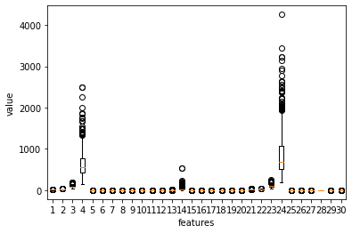

분류하는 뉴런
5 weeks by lsk
Table of Contents
jupyter nbconvert --to script "DataScience/source_code/text분류.ipynb" jupyter nbconvert --to script "DataScience/source_code/의류분류.ipynb"
1 로지스틱 손실 함수를 이용
로지스틱 회귀의 목표는 올바르게 분류되는 데이터의 비율을 높이는 것이다. 이 비율은 미분 가능하지 않기 때문에 경사 하강법의 손실 함수로 사용할 수 없다. 로지스틱 손실 함수를 손실 함수로 대신 사용한다.
2 미분의 연쇄 법칙
3 실습
3.1 데이터 세트 준비하기
from sklearn.datasets import load_breast_cancer cancer = load_breast_cancer() print(cancer)
{'data': array([[1.799e+01, 1.038e+01, 1.228e+02, ..., 2.654e-01, 4.601e-01,
1.189e-01],
[2.057e+01, 1.777e+01, 1.329e+02, ..., 1.860e-01, 2.750e-01,
8.902e-02],
[1.969e+01, 2.125e+01, 1.300e+02, ..., 2.430e-01, 3.613e-01,
8.758e-02],
...,
[1.660e+01, 2.808e+01, 1.083e+02, ..., 1.418e-01, 2.218e-01,
7.820e-02],
[2.060e+01, 2.933e+01, 1.401e+02, ..., 2.650e-01, 4.087e-01,
1.240e-01],
[7.760e+00, 2.454e+01, 4.792e+01, ..., 0.000e+00, 2.871e-01,
7.039e-02]]), 'target': array([0, 0, 0, 0, 0, 0, 0, 0, 0, 0, 0, 0, 0, 0, 0, 0, 0, 0, 0, 1, 1, 1,
0, 0, 0, 0, 0, 0, 0, 0, 0, 0, 0, 0, 0, 0, 0, 1, 0, 0, 0, 0, 0, 0,
0, 0, 1, 0, 1, 1, 1, 1, 1, 0, 0, 1, 0, 0, 1, 1, 1, 1, 0, 1, 0, 0,
1, 1, 1, 1, 0, 1, 0, 0, 1, 0, 1, 0, 0, 1, 1, 1, 0, 0, 1, 0, 0, 0,
1, 1, 1, 0, 1, 1, 0, 0, 1, 1, 1, 0, 0, 1, 1, 1, 1, 0, 1, 1, 0, 1,
1, 1, 1, 1, 1, 1, 1, 0, 0, 0, 1, 0, 0, 1, 1, 1, 0, 0, 1, 0, 1, 0,
0, 1, 0, 0, 1, 1, 0, 1, 1, 0, 1, 1, 1, 1, 0, 1, 1, 1, 1, 1, 1, 1,
1, 1, 0, 1, 1, 1, 1, 0, 0, 1, 0, 1, 1, 0, 0, 1, 1, 0, 0, 1, 1, 1,
1, 0, 1, 1, 0, 0, 0, 1, 0, 1, 0, 1, 1, 1, 0, 1, 1, 0, 0, 1, 0, 0,
0, 0, 1, 0, 0, 0, 1, 0, 1, 0, 1, 1, 0, 1, 0, 0, 0, 0, 1, 1, 0, 0,
1, 1, 1, 0, 1, 1, 1, 1, 1, 0, 0, 1, 1, 0, 1, 1, 0, 0, 1, 0, 1, 1,
1, 1, 0, 1, 1, 1, 1, 1, 0, 1, 0, 0, 0, 0, 0, 0, 0, 0, 0, 0, 0, 0,
0, 0, 1, 1, 1, 1, 1, 1, 0, 1, 0, 1, 1, 0, 1, 1, 0, 1, 0, 0, 1, 1,
1, 1, 1, 1, 1, 1, 1, 1, 1, 1, 1, 0, 1, 1, 0, 1, 0, 1, 1, 1, 1, 1,
1, 1, 1, 1, 1, 1, 1, 1, 1, 0, 1, 1, 1, 0, 1, 0, 1, 1, 1, 1, 0, 0,
0, 1, 1, 1, 1, 0, 1, 0, 1, 0, 1, 1, 1, 0, 1, 1, 1, 1, 1, 1, 1, 0,
0, 0, 1, 1, 1, 1, 1, 1, 1, 1, 1, 1, 1, 0, 0, 1, 0, 0, 0, 1, 0, 0,
1, 1, 1, 1, 1, 0, 1, 1, 1, 1, 1, 0, 1, 1, 1, 0, 1, 1, 0, 0, 1, 1,
1, 1, 1, 1, 0, 1, 1, 1, 1, 1, 1, 1, 0, 1, 1, 1, 1, 1, 0, 1, 1, 0,
1, 1, 1, 1, 1, 1, 1, 1, 1, 1, 1, 1, 0, 1, 0, 0, 1, 0, 1, 1, 1, 1,
1, 0, 1, 1, 0, 1, 0, 1, 1, 0, 1, 0, 1, 1, 1, 1, 1, 1, 1, 1, 0, 0,
1, 1, 1, 1, 1, 1, 0, 1, 1, 1, 1, 1, 1, 1, 1, 1, 1, 0, 1, 1, 1, 1,
1, 1, 1, 0, 1, 0, 1, 1, 0, 1, 1, 1, 1, 1, 0, 0, 1, 0, 1, 0, 1, 1,
1, 1, 1, 0, 1, 1, 0, 1, 0, 1, 0, 0, 1, 1, 1, 0, 1, 1, 1, 1, 1, 1,
1, 1, 1, 1, 1, 0, 1, 0, 0, 1, 1, 1, 1, 1, 1, 1, 1, 1, 1, 1, 1, 1,
1, 1, 1, 1, 1, 1, 1, 1, 1, 1, 1, 1, 0, 0, 0, 0, 0, 0, 1]), 'frame': None, 'target_names': array(['malignant', 'benign'], dtype='<U9'), 'DESCR': '.. _breast_cancer_dataset:\n\nBreast cancer wisconsin (diagnostic) dataset\n--------------------------------------------\n\n**Data Set Characteristics:**\n\n :Number of Instances: 569\n\n :Number of Attributes: 30 numeric, predictive attributes and the class\n\n :Attribute Information:\n - radius (mean of distances from center to points on the perimeter)\n - texture (standard deviation of gray-scale values)\n - perimeter\n - area\n - smoothness (local variation in radius lengths)\n - compactness (perimeter^2 / area - 1.0)\n - concavity (severity of concave portions of the contour)\n - concave points (number of concave portions of the contour)\n - symmetry\n - fractal dimension ("coastline approximation" - 1)\n\n The mean, standard error, and "worst" or largest (mean of the three\n worst/largest values) of these features were computed for each image,\n resulting in 30 features. For instance, field 0 is Mean Radius, field\n 10 is Radius SE, field 20 is Worst Radius.\n\n - class:\n - WDBC-Malignant\n - WDBC-Benign\n\n :Summary Statistics:\n\n ===================================== ====== ======\n Min Max\n ===================================== ====== ======\n radius (mean): 6.981 28.11\n texture (mean): 9.71 39.28\n perimeter (mean): 43.79 188.5\n area (mean): 143.5 2501.0\n smoothness (mean): 0.053 0.163\n compactness (mean): 0.019 0.345\n concavity (mean): 0.0 0.427\n concave points (mean): 0.0 0.201\n symmetry (mean): 0.106 0.304\n fractal dimension (mean): 0.05 0.097\n radius (standard error): 0.112 2.873\n texture (standard error): 0.36 4.885\n perimeter (standard error): 0.757 21.98\n area (standard error): 6.802 542.2\n smoothness (standard error): 0.002 0.031\n compactness (standard error): 0.002 0.135\n concavity (standard error): 0.0 0.396\n concave points (standard error): 0.0 0.053\n symmetry (standard error): 0.008 0.079\n fractal dimension (standard error): 0.001 0.03\n radius (worst): 7.93 36.04\n texture (worst): 12.02 49.54\n perimeter (worst): 50.41 251.2\n area (worst): 185.2 4254.0\n smoothness (worst): 0.071 0.223\n compactness (worst): 0.027 1.058\n concavity (worst): 0.0 1.252\n concave points (worst): 0.0 0.291\n symmetry (worst): 0.156 0.664\n fractal dimension (worst): 0.055 0.208\n ===================================== ====== ======\n\n :Missing Attribute Values: None\n\n :Class Distribution: 212 - Malignant, 357 - Benign\n\n :Creator: Dr. William H. Wolberg, W. Nick Street, Olvi L. Mangasarian\n\n :Donor: Nick Street\n\n :Date: November, 1995\n\nThis is a copy of UCI ML Breast Cancer Wisconsin (Diagnostic) datasets.\nhttps://goo.gl/U2Uwz2\n\nFeatures are computed from a digitized image of a fine needle\naspirate (FNA) of a breast mass. They describe\ncharacteristics of the cell nuclei present in the image.\n\nSeparating plane described above was obtained using\nMultisurface Method-Tree (MSM-T) [K. P. Bennett, "Decision Tree\nConstruction Via Linear Programming." Proceedings of the 4th\nMidwest Artificial Intelligence and Cognitive Science Society,\npp. 97-101, 1992], a classification method which uses linear\nprogramming to construct a decision tree. Relevant features\nwere selected using an exhaustive search in the space of 1-4\nfeatures and 1-3 separating planes.\n\nThe actual linear program used to obtain the separating plane\nin the 3-dimensional space is that described in:\n[K. P. Bennett and O. L. Mangasarian: "Robust Linear\nProgramming Discrimination of Two Linearly Inseparable Sets",\nOptimization Methods and Software 1, 1992, 23-34].\n\nThis database is also available through the UW CS ftp server:\n\nftp ftp.cs.wisc.edu\ncd math-prog/cpo-dataset/machine-learn/WDBC/\n\n.. topic:: References\n\n - W.N. Street, W.H. Wolberg and O.L. Mangasarian. Nuclear feature extraction \n for breast tumor diagnosis. IS&T/SPIE 1993 International Symposium on \n Electronic Imaging: Science and Technology, volume 1905, pages 861-870,\n San Jose, CA, 1993.\n - O.L. Mangasarian, W.N. Street and W.H. Wolberg. Breast cancer diagnosis and \n prognosis via linear programming. Operations Research, 43(4), pages 570-577, \n July-August 1995.\n - W.H. Wolberg, W.N. Street, and O.L. Mangasarian. Machine learning techniques\n to diagnose breast cancer from fine-needle aspirates. Cancer Letters 77 (1994) \n 163-171.', 'feature_names': array(['mean radius', 'mean texture', 'mean perimeter', 'mean area',
'mean smoothness', 'mean compactness', 'mean concavity',
'mean concave points', 'mean symmetry', 'mean fractal dimension',
'radius error', 'texture error', 'perimeter error', 'area error',
'smoothness error', 'compactness error', 'concavity error',
'concave points error', 'symmetry error',
'fractal dimension error', 'worst radius', 'worst texture',
'worst perimeter', 'worst area', 'worst smoothness',
'worst compactness', 'worst concavity', 'worst concave points',
'worst symmetry', 'worst fractal dimension'], dtype='<U23'), 'filename': '/Users/sroh/.pyenv/versions/anaconda3-5.3.1/envs/uiap/lib/python3.7/site-packages/sklearn/datasets/data/breast_cancer.csv'}
print(cancer.data)
[[1.799e+01 1.038e+01 1.228e+02 ... 2.654e-01 4.601e-01 1.189e-01] [2.057e+01 1.777e+01 1.329e+02 ... 1.860e-01 2.750e-01 8.902e-02] [1.969e+01 2.125e+01 1.300e+02 ... 2.430e-01 3.613e-01 8.758e-02] ... [1.660e+01 2.808e+01 1.083e+02 ... 1.418e-01 2.218e-01 7.820e-02] [2.060e+01 2.933e+01 1.401e+02 ... 2.650e-01 4.087e-01 1.240e-01] [7.760e+00 2.454e+01 4.792e+01 ... 0.000e+00 2.871e-01 7.039e-02]]
3.2 그래프로 데이터 파악하기
import matplotlib.pyplot as plt
plt.boxplot(cancer.data)
plt.xlabel('features')
plt.ylabel('value')
plt.show()

print(cancer.feature_names[[3, 13, 23]])
['mean area' 'area error' 'worst area']
3.3 타깃 데이터 확인하고 훈련 데이터 준비하기
returncounts=True 비율을 나타내라
import numpy as np print(np.unique(cancer.target, return_counts=True))
(array([0, 1]), array([212, 357]))
x = cancer.data y = cancer.target
3.4 로지스틱 회귀를 이용한 뉴런을 만들어보자
훈련 -> 검증 -> 테스트
데이터셋으로 훈련세트와 테스트 세트, 검증 세트를 만들어야겠다. (실제 데이터를 더 구할 수 없으므로)
- 테스트 세트보다 훈련 세트가 많아야 한다.
- 양성, 음성 클래스가 훈련세트나 테스트 세트의 어느 한쪽에 몰리지 않도록 골고루 섞어야 한다.